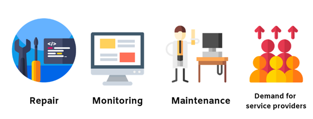
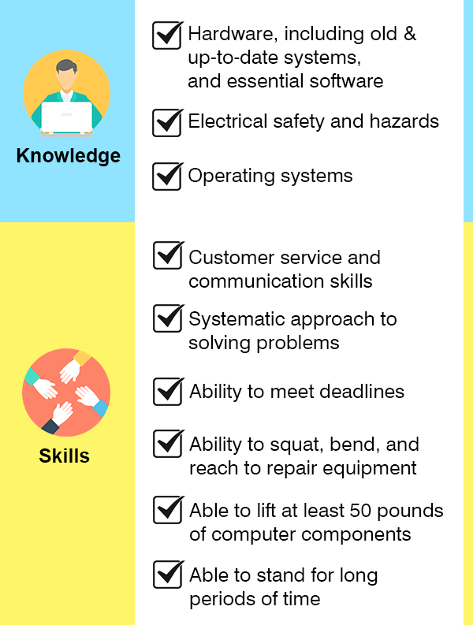

INTRODUCTION
Hey there! Welcome to the course of CSS!
As many of today's basic functions are being simplified by technology, computers have been on the forefront in developing innovations through its many functions. Many of the things that we thought were impossible before are not being achieved by computers nowadayss.
In this digital economy, having knowledge and skills in computer servicing is the start and most fundamental of all.
In today’s industry, almost every establishment needs the assistance of technology.
Even establishments and businesses are now gearing towards the use of information technology to promote their services.
The demand for people who offer computer servicing and repair continues to increase as society rapidly changes.

For Example:
Computer hardware need maintenance services to repair normal wear and tear.
Network infrastructures used by organizations will need maintenance and monitoring.
Computer equipment would need occasional repair and maintenance; thus, requiring the assistance of computer systems service providers.
Commonly, the industry’s main line of business is on selling computer hardware systems and components, as well as providing repair and installation services.
Thus, if you were to venture in this industry, you must be well informed on basic concepts related to computer systems servicing.
Since society is now becoming more technology-driven and technology-dependent, it is no wonder that more and more establishments need the expertise of computer service providers.
The Computer Systems Servicing National Certificate (NC II) Qualification trains its learners with competencies that will allow them to diagnose and troubleshoot PC systems and software issues, as well as restoring its parts to return the device to its normal function.
A person who has achieved the Computer Systems Servicing NC II Qualification is competent to be a:
Because technology also changes rapidly, computer technicians must be updated with the current trends, technology, and developments related to the computer industry. In addition to that, computer staff may need to work with various people that will require their expertise. Thus, the ability to work in groups and the ability to translate technical information to non-technical users may be required when working in this field.
Having a CSS NC II qualification is an entry point for a career in the computer field.
Being a computer technician may require you to travel to see clients or be at an office and workplaces as a member of the IT support team. As a technician, you must possess the interests and skills that the job demands.
As much as possible, you will need some prior knowledge and skills so that you will be able to perform computer servicing easily.
